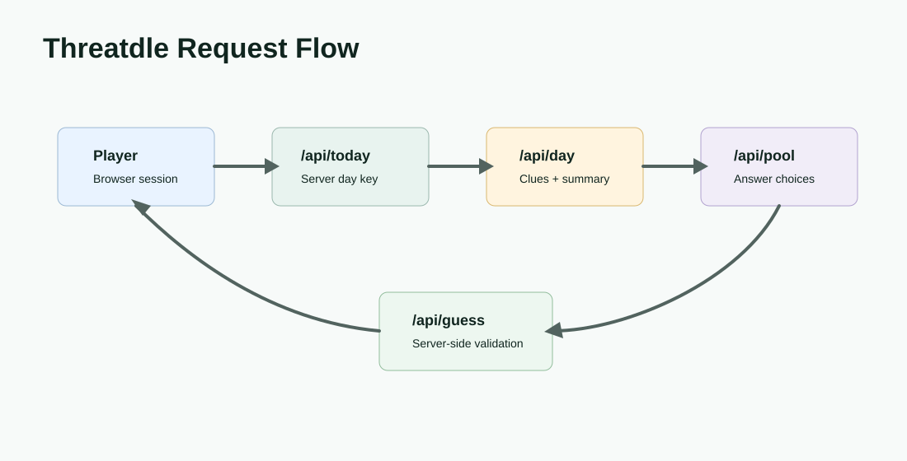

Problem
Cybersecurity learning often separates structured threat intelligence from memorable practice. Threatdle uses the shape of a daily puzzle to make actors, malware, and ATT&CK techniques easier to reason about repeatedly.
Solution
The documented workflow ingests MITRE ATT&CK STIX, MISP Galaxy threat-actor data, and curated attack-flow files. A snapshot-keyed SQLite workflow records source materialization, then deterministic puzzle generation creates daily game content with repeat-window controls.
Each daily puzzle runs in three phases. The player names the threat actor, then a piece of malware it uses, then a technique it relies on. Every wrong guess is scored against the hidden answer, so each miss narrows the field instead of just ending a turn. The final report links the answers to their MITRE ATT&CK entries, and an archive holds earlier days.
Request Flow

Five Netlify Functions serve the game. They return today's puzzle and the list of playable days, one day's clues, the answer choices for each phase, the result of a guess, and the end-of-day summary.
Design Decisions
Server-Side Validation
Guess validation is handled by API endpoints so the answer pool is not simply exposed in the public client bundle.
Deterministic Daily Play
Date-based generation makes the same daily puzzle resolve consistently for different users and devices.
Snapshot Keys
Snapshot metadata gives puzzle content a stable reference to the source material used to build it.
Focused First Game Loop
The first release emphasizes actor, malware, and technique deduction rather than turning every intelligence attribute into a clue.
Live Behavior
The public site and /api/game/today endpoint expose the current puzzle state. The API returns fields including snapshot identity, timezone, server day key, current day key, latest day, and available game days.
The server picks the day in New York time and offers only days up to that date. Changing a device's clock does not unlock tomorrow's puzzle.
Gameplay Boundary
The public site exposes a focused daily game loop: load the active day, review clue material, make a guess, and let the API validate the answer while keeping solution material out of the static client.
The answers live in a private runtime bundle. The deploy downloads a prebuilt copy, optionally checked against a SHA-256 hash, or builds one from source, and ships it with the functions, outside the public folder the browser can read. A portfolio review recorded 24 targeted local tests passing.